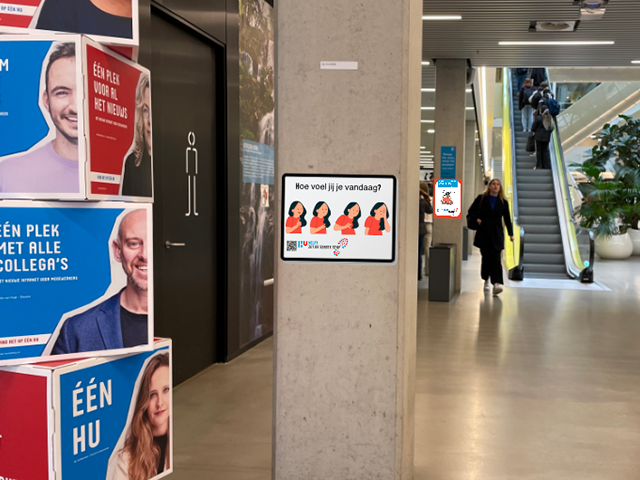

From Workshop to Pixel
Hoi! Leuk dat you're taking a look into my (digital) chaos.
I am Casper, born in '97 in Delft and currently deep into the world of CMD at the Hogeschool Utrecht. My background is a bit unconventional for a designer: I’ve spent years working in woodworking, electronics, and horticulture. That practical 'makers-mindset' is what I carry with me everywhere.
These days, I combine that physical experience with the digital side of my craft. Whether it’s designing clean UI-elements, illustrating concepts, or building tangible installations, I love tinkering behind my laptop just as much as I do in the workshop. Beyond my studies, I run an active Discord gaming community of 150+ members, where I handle the technical infrastructure and community events.
In short: I am a designer who isn't afraid to get his hands dirty. Let's build something.
Selected Work

Generation Plastic Soup
2025

Street Fresh
2024

Samen Spelen
2024

Grijpmachine
2024

Kodak
2024

Bomby Bird
2024

Picknicken met Sophie
2023

OSRS Kerst
2023

De Grinch
2023

Vechtclub XL
2023

Hu Begeleidt
2022

Dan maar hier!
2022
Let's Connect
I am always open to discussing new projects, technical collaborations, or simply sharing ideas about craftsmanship and technology.